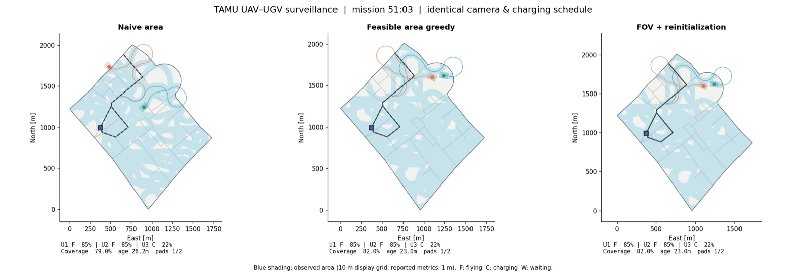

Jaekyung (Jackie) Lee
I work on planning and scheduling for teams of battery-limited robots. My research asks how UAVs, ground vehicles and shared charging stations should be coordinated so that a mission keeps running for hours or days: which targets each vehicle visits, where and when it recharges, and how the plan holds up when something runs late.
I am advised by Dr. Sivakumar Rathinam. My work combines combinatorial optimization (team orienteering, integer linear programming, meta-heuristics) with simulation that checks the plans against vehicle dynamics, battery and sensor constraints.
In industry I have built autonomy software for real robots: a ROS 2 / Isaac Sim test framework and EKF-based control pipelines for warehouse mobile robots at Amazon Robotics, and camera calibration and NVIDIA Jetson camera bring-up for an automated valet parking system at Magna Electronics.
- Multi-robot path planning
- Energy-aware scheduling
- UAV–UGV teaming
- Combinatorial optimization
- Motion planning & control
- Sim-to-real
News
- Teaching assistant for MEEN 432 Automotive Engineering at Texas A&M.
- Released re-implemented code and re-run experiments for the ICUAS 2025 and RA-L 2025 papers.
- Completed my ADAS Engineering internship at Magna Electronics (Lowell, MA), working on the perception front end of an automated valet parking system.
- Joined Magna Electronics as an ADAS Engineering Intern.
- Completed my Applied Scientist II internship at Amazon Robotics (North Reading, MA).
- Joined Amazon Robotics as an Applied Scientist II Intern on the warehouse mobile robot R&D team.
- Presented “Team Orienteering and Scheduling Algorithms for Collaborative UAV-UGV Area Coverage with Battery Constraints” at ICUAS 2025.
- Received the KUSCO Graduate Scholarship and the WISE Susan M. Arseven ’75 “Make-a-Difference” Memorial Award.
- “The Persistent Robot Charging Problem for Long-Duration Autonomy” published in IEEE Robotics and Automation Letters.
- Second place, poster award at the 2024 US-Korea Conference (UKC).
Research
All research →
Camera-aware UAV–UGV area coverage
UAVs plan turn-limited paths over camera-footprint cells while a road-bound UGV recharges them on an ILP schedule.

Persistent robot charging
An ILP picks each robot's initial charge so a heterogeneous fleet keeps running on the fewest charging stations.

Meta-heuristic aerial–ground routing
A tabu-search team orienteering solver for multi-UAV persistent surveillance with a mobile recharging UGV over 72 hours.
Experience
Full CV →- May – Aug 2026Magna ElectronicsADAS Engineering Intern · Lowell, MA
- May – Dec 2025Amazon RoboticsApplied Scientist II Intern · North Reading, MA
- 2022 – presentTexas A&M University, Autonomous Systems LabGraduate Research Assistant · College Station, TX
- 2022 – 2024DEVCOM Army Research LaboratoryGraduate Researcher (collaborative project) · College Station, TX